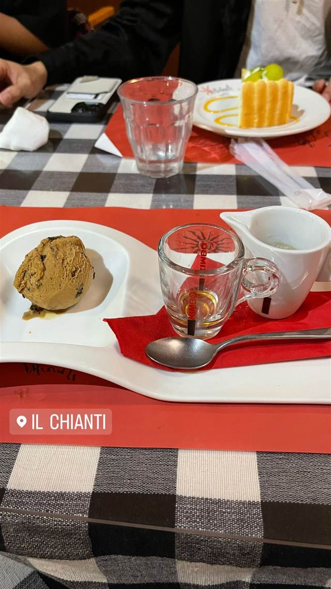

iL-CHIANTI CAFE 江の島
江の島灯台近く、シチリアの断崖をイメージした高台のジェラート
IL CHIANTI
1972年創業のイルキャンティグループが2012年に江の島灯台近くに開いたカフェ。シチリアの断崖のレストランをイメージした造りで、海を望みながらジェラートなどのデザートが楽しめる。
TRIVIA
へえ、という話
- イルキャンティグループは1972年笹塚に1号店を開いたのが始まり
- 店名の「iL」はイタリア語の定冠詞で、商標問題を経て「iL-CHIANTI」に改称した経緯がある
REVIEWS
みんなの声
3.25食べログ
「テラス席からの絶景と混雑」に注目
- 江ノ島の高台にあるテラス席からの海や夕日の絶景を評価する声が多い
- 料理の評価は美味しいという声から並程度という声まで幅が見られる
- 混雑時は待ち時間が長く予約客が優先されがちという指摘が複数ある
食べログ 口コミ382件
| 創業 | 2012年3月オープン |
|---|---|
| 系譜 | 1972年創業のイタリア料理店「イルキャンティ」グループの一軒。片瀬海岸の姉妹店「iL CHIANTI BEACHE」とともに江の島エリアに展開。 |
| 看板 | 自家製ジェラートやケーキなどのデザート、100種以上のオリジナルイタリア料理 |
| こだわり | 江の島灯台近くの高台に位置し、シチリア島の断崖のレストランをイメージした造り。海と夕景を眺めながら食事ができる。 |
| どこから | 東京から1時間ほど |
| いつ行けるか | 行列 |
| 予算 | 昼 ¥1,000～¥1,999 夜 ¥2,000～¥2,999 |
| 予約 | 予約可 |
| 場所 | 小田急片瀬江ノ島駅 神奈川県藤沢市江の島2-4-15 |
| 注意 | 江の島灯台付近、小田急片瀬江ノ島駅から徒歩圏。テラス席から相模湾を一望できる。 |
食べたもの：ジェラートとエスプレッソ
NEARBY
近い店・同じ系統の店
-
 ピザ 小田急片瀬江ノ島駅
GARB 江ノ島
屋上テラスから富士山も望める薪窯ナポリピッツァ
昼 ¥1,000～¥1,999 夜 ¥4,000～¥4,999
ピザ 小田急片瀬江ノ島駅
GARB 江ノ島
屋上テラスから富士山も望める薪窯ナポリピッツァ
昼 ¥1,000～¥1,999 夜 ¥4,000～¥4,999
-
 パスタ 江ノ島駅(江ノ電)徒歩3分
PIZZERIA&DINING PICO 江ノ島店
しらすピッツァと自家製パンチェッタのカルボナーラが名物
昼 ¥1,000～¥1,999 夜 ¥2,000～¥2,999
パスタ 江ノ島駅(江ノ電)徒歩3分
PIZZERIA&DINING PICO 江ノ島店
しらすピッツァと自家製パンチェッタのカルボナーラが名物
昼 ¥1,000～¥1,999 夜 ¥2,000～¥2,999
-
 カフェ 小田急片瀬江ノ島駅
LONCAFE 湘南江の島本店
日本初のフレンチトースト専門店、パン・ペルデュの製法で焼き上げる
昼 ¥1,000～¥1,999 夜 ¥1,000～¥1,999
カフェ 小田急片瀬江ノ島駅
LONCAFE 湘南江の島本店
日本初のフレンチトースト専門店、パン・ペルデュの製法で焼き上げる
昼 ¥1,000～¥1,999 夜 ¥1,000～¥1,999
-
 カフェ 小田急片瀬江ノ島駅
cafeとびっちょ 江の島ヨットハーバー店
地元湘南の生しらすにこだわるしらす丼、しらすパンやビールも
昼 ¥1,000～¥1,999 夜 ¥1,000～¥1,999
カフェ 小田急片瀬江ノ島駅
cafeとびっちょ 江の島ヨットハーバー店
地元湘南の生しらすにこだわるしらす丼、しらすパンやビールも
昼 ¥1,000～¥1,999 夜 ¥1,000～¥1,999
-
 カフェ 小田急片瀬江ノ島駅
SUNCAFE PARADISE（サンカフェパラダイス）
オーナー手作りのトレーラーハウスで海を感じるガパオ風ライス
昼 ¥1,000～¥1,999 夜 ¥1,000～¥1,999
カフェ 小田急片瀬江ノ島駅
SUNCAFE PARADISE（サンカフェパラダイス）
オーナー手作りのトレーラーハウスで海を感じるガパオ風ライス
昼 ¥1,000～¥1,999 夜 ¥1,000～¥1,999
-
 アイス・ジェラート 中目黒駅
Premarché Gelateria Tokyo 中目黒駅前店
常時30〜40種、半数近くがヴィーガンの国際受賞ジェラート
昼 ～¥999 夜 ～¥999
アイス・ジェラート 中目黒駅
Premarché Gelateria Tokyo 中目黒駅前店
常時30〜40種、半数近くがヴィーガンの国際受賞ジェラート
昼 ～¥999 夜 ～¥999